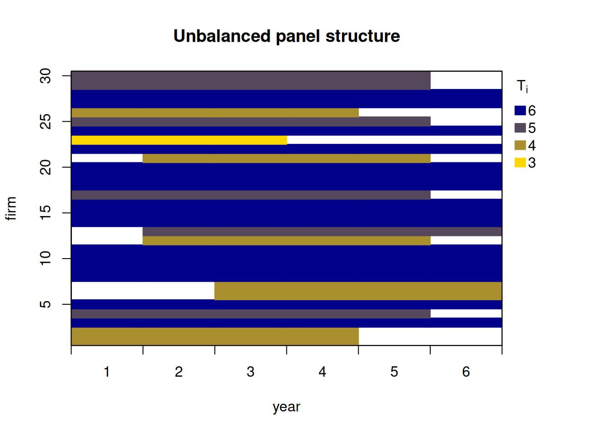
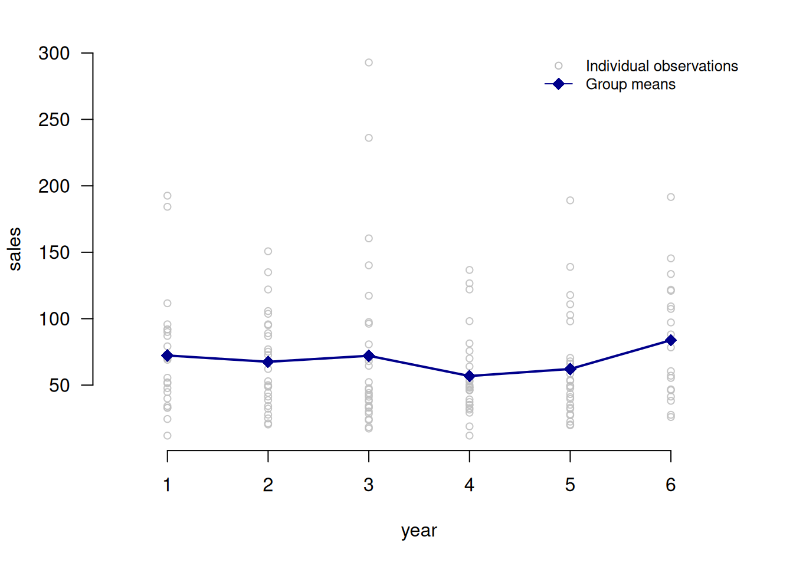
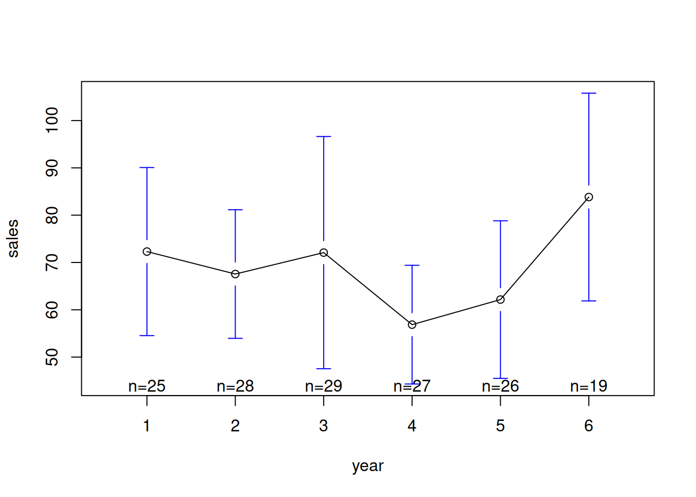

library(paneldesc)
library(gplots)
library(modelsummary)
library(plm)
library(pdynmc)
library(xtsum)8 Comparison with other packages
Almost all of this package’s functionality can be replicated using individual functions from other packages. However, I believe the main advantage of the paneldesc package is that it combines all the functions necessary for panel data analysis and implements them in a single format. Below is a comparison with individual functions from other packages.
8.1 Set up
Import packages to compare.
8.2 Data import
Import the built-in dataset with simulated unbalanced panel data.
data(production)Create unbalanced panel for the analysis purposes.
unbalanced <- production[rowSums(!is.na(production[, c("sales", "capital", "labor", "industry")])) > 0, ]8.3 paneldesc vs. pdynmc
paneldesc::plot_patterns(production, index = c("firm", "year"))
pdynmc::strucUPD.plot(unbalanced, i.name = "firm", t.name = "year")
8.4 paneldesc vs. modelsummary
paneldesc::summarize_numeric(production, select = c("capital", "labor"), group = "year")| year | variable | count | mean | std | min | max |
|---|---|---|---|---|---|---|
| 1 | capital | 25 | 40.154 | 39.004 | 3.206 | 148.942 |
| 1 | labor | 24 | 74.349 | 69.766 | 18.414 | 333.377 |
| 2 | capital | 28 | 30.210 | 30.596 | 5.032 | 122.332 |
| 2 | labor | 28 | 81.758 | 66.571 | 17.666 | 327.581 |
| 3 | capital | 28 | 30.111 | 30.372 | 2.030 | 121.740 |
| 3 | labor | 29 | 82.256 | 106.869 | 8.172 | 579.024 |
| 4 | capital | 28 | 34.889 | 32.046 | 7.146 | 148.994 |
| 4 | labor | 29 | 55.533 | 46.448 | 5.972 | 207.572 |
| 5 | capital | 26 | 28.076 | 21.871 | 4.637 | 78.244 |
| 5 | labor | 25 | 74.056 | 71.255 | 15.879 | 266.829 |
| 6 | capital | 19 | 37.145 | 39.400 | 3.690 | 160.085 |
| 6 | labor | 19 | 101.003 | 67.261 | 18.669 | 259.851 |
modelsummary::datasummary(Factor(year) * (capital + labor) ~ N + Mean + SD + Min + Max, data = production)| year | N | Mean | SD | Min | Max | |
|---|---|---|---|---|---|---|
| 1 | capital | 25 | 40.15 | 39.00 | 3.21 | 148.94 |
| labor | 24 | 74.35 | 69.77 | 18.41 | 333.38 | |
| 2 | capital | 28 | 30.21 | 30.60 | 5.03 | 122.33 |
| labor | 28 | 81.76 | 66.57 | 17.67 | 327.58 | |
| 3 | capital | 28 | 30.11 | 30.37 | 2.03 | 121.74 |
| labor | 29 | 82.26 | 106.87 | 8.17 | 579.02 | |
| 4 | capital | 28 | 34.89 | 32.05 | 7.15 | 148.99 |
| labor | 29 | 55.53 | 46.45 | 5.97 | 207.57 | |
| 5 | capital | 26 | 28.08 | 21.87 | 4.64 | 78.24 |
| labor | 25 | 74.06 | 71.26 | 15.88 | 266.83 | |
| 6 | capital | 19 | 37.15 | 39.40 | 3.69 | 160.08 |
| labor | 19 | 101.00 | 67.26 | 18.67 | 259.85 |
8.5 paneldesc vs. gplots
paneldesc::plot_heterogeneity(production, select = "sales", group = "year")
gplots::plotmeans(sales ~ year, production)
8.6 paneldesc vs. xtsum
paneldesc::decompose_numeric(production, select = c("sales", "capital", "labor"), index = "firm")| variable | dimension | mean | std | min | max | count |
|---|---|---|---|---|---|---|
| sales | overall | 68.402 | 45.025 | 11.999 | 292.850 | 154.000 |
| sales | between | NA | 29.060 | 34.263 | 166.364 | 30.000 |
| sales | within | NA | 34.127 | -12.444 | 234.297 | 5.133 |
| capital | overall | 33.152 | 32.044 | 2.030 | 160.085 | 154.000 |
| capital | between | NA | 17.414 | 9.019 | 74.225 | 30.000 |
| capital | within | NA | 27.072 | -25.567 | 149.329 | 5.133 |
| labor | overall | 76.883 | 74.150 | 5.972 | 579.024 | 154.000 |
| labor | between | NA | 41.068 | 31.021 | 190.645 | 30.000 |
| labor | within | NA | 61.202 | -58.040 | 483.217 | 5.133 |
xtsum::xtsum(production, variables = c("sales", "capital", "labor"), id = "firm", t = "year", na.rm = TRUE)| Variable | Dim | Mean | SD | Min | Max | Observations |
|---|---|---|---|---|---|---|
| ___________ | _________ | |||||
| sales | overall | 68.402 | 45.025 | 11.999 | 292.85 | N = 154 |
| between | 29.06 | 34.263 | 166.364 | n = 30 | ||
| within | 34.127 | -12.444 | 234.297 | T = 5.133 | ||
| ___________ | _________ | |||||
| capital | overall | 33.152 | 32.044 | 2.03 | 160.085 | N = 154 |
| between | 17.414 | 9.019 | 74.225 | n = 30 | ||
| within | 27.072 | -25.567 | 149.329 | T = 5.133 | ||
| ___________ | _________ | |||||
| labor | overall | 76.883 | 74.15 | 5.972 | 579.024 | N = 154 |
| between | 41.068 | 31.021 | 190.645 | n = 30 | ||
| within | 61.202 | -58.04 | 483.217 | T = 5.133 |
8.7 paneldesc vs. plm
paneldesc_bal_1 <- paneldesc::make_balanced(unbalanced, index = c("firm", "year"), balance = "entities")
dim(paneldesc_bal_1)[1] 96 8paneldesc_bal_2 <- paneldesc::make_balanced(unbalanced, index = c("firm", "year"), balance = "periods")
dim(paneldesc_bal_2)[1] 30 8paneldesc_bal_3 <- paneldesc::make_balanced(unbalanced, index = c("firm", "year"), balance = "rows")
dim(paneldesc_bal_3)[1] 180 8unbalanced_pdata <- plm::pdata.frame(unbalanced, index = c("firm", "year"))plm_bal_1 <- plm::make.pbalanced(unbalanced_pdata, balance.type = "shared.individuals")
dim(plm_bal_1)[1] 96 8plm_bal_2 <- plm::make.pbalanced(unbalanced_pdata, balance.type = "shared.times")
dim(plm_bal_2)[1] 30 8plm_bal_3 <- plm::make.pbalanced(unbalanced_pdata, balance.type = "fill")
dim(plm_bal_3)[1] 180 8